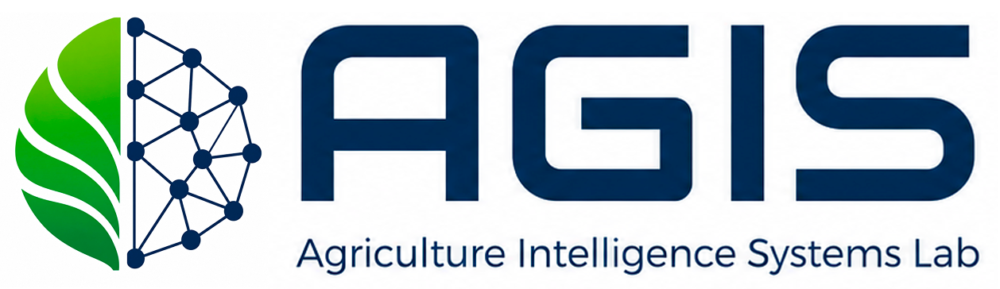

광합성을 높이려면 빛·온도·CO₂를 동시에 맞춰야 하지만, 이를 다루는 구동기들은 같은 노드를 서로 반대로 끌어당기며 충돌한다. 이 관계를 온톨로지로 표현하고, 6-Layer 규칙과 우선순위로 충돌을 풀어 최적 제어 명령을 만든다.

논문 18편을 구동기→상태변수→목표로 연결한 그래프. 충돌 노드를 누르면 구동기별 문헌 근거·운영비·해소 우선순위가, 문헌 노드를 누르면 그 논문의 근거가 펼쳐진다.
왼쪽에서 광·온도·CO₂와 비용 상한을 조절하면 6-Layer가 순서대로 처리해 구동기 동작 순서·이유·비용과 정식기 최적 대비 달성 광합성을 보여준다.
거대 LLM 단독과 Layer 적용을 8개 기준으로 채점한 점수, 기준별 차이, 그리고 그 답변대로 제어했을 때의 광합성률을 본 결과 시뮬레이션.
동일 시나리오에 실제 LLM을 호출한 전문. 거대 LLM은 일반 산문, Layer 적용은 충돌·우선순위·SmartFarm 코드·문헌 ID·비용으로 구체화된다.